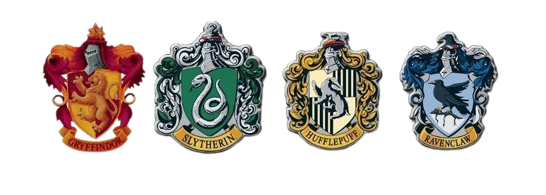
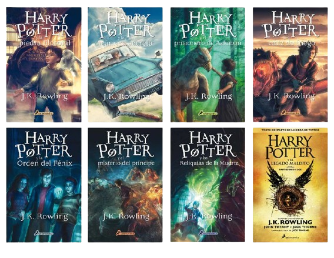
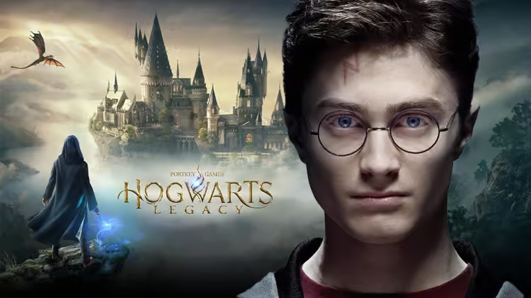

Bienvenidos al Mundo de Harry Potter
El universo de Harry Potter, creado por J.K. Rowling, gira en torno a Harry Potter, un joven mago que descubre su identidad mágica y asiste al Colegio Hogwarts de Magia y Hechicería. Junto a sus amigos Hermione Granger y Ron Weasley, Harry enfrenta al oscuro mago Lord Voldemort, quien busca dominar el mundo mágico. La serie explora temas de amistad, valentía y el enfrentamiento entre el bien y el mal, ambientada en un mundo lleno de hechizos, criaturas mágicas y lugares emblemáticos como Hogwarts, Diagon Alley y el Ministerio de Magia. La saga incluye siete libros, películas, y expansiones como "Animales Fantásticos" y "El Legado Maldito".
Casas de Harry Potter
En el Colegio Hogwarts de Magia y Hechicería, los estudiantes son divididos en cuatro casas: Gryffindor, conocida por su valentía y coraje; Hufflepuff, valorada por su lealtad y trabajo duro; Ravenclaw, que premia la inteligencia y el amor por el conocimiento; y Slytherin, reconocida por su ambición y astucia. Cada casa tiene su propio fundador histórico, colores distintivos, y características únicas que fomentan un sentido de pertenencia y competencia amistosa entre los estudiantes.
Libros de Harry Potter
Harry potter Hogwarts legacy
"Hogwarts Legacy" es un videojuego de rol y acción ambientado en el universo de Harry Potter, desarrollado por Portkey Games y lanzado en 2023. Ambientado en el siglo XIX, mucho antes de los eventos de la serie original, el jugador asume el papel de un estudiante de Hogwarts con una habilidad única para manipular la magia antigua. Los jugadores pueden explorar libremente el castillo de Hogwarts, aprender y mejorar hechizos, preparar pociones, domesticar criaturas mágicas y enfrentar enemigos mientras descubren un misterio oculto que amenaza el mundo mágico. El juego ofrece una experiencia inmersiva, permitiendo a los jugadores tomar decisiones que afectan su camino y la historia.